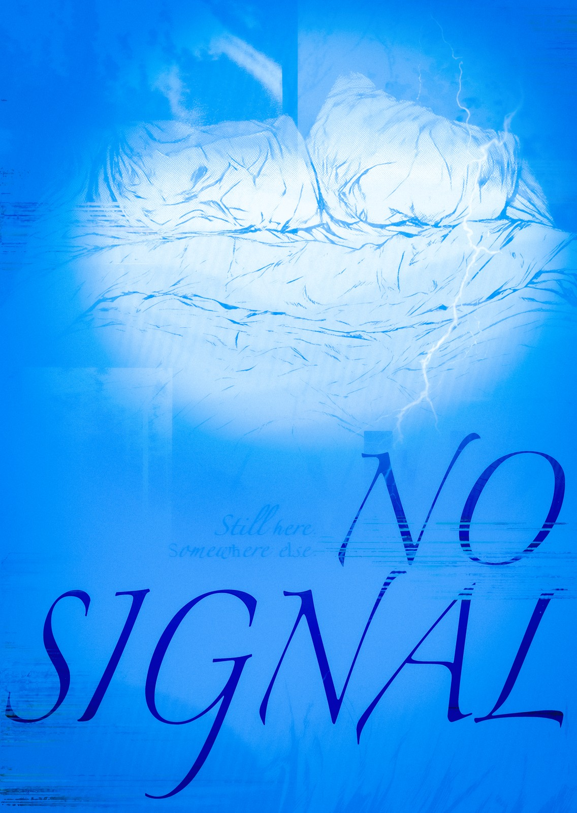

13 / 13.jpg'}))">
Platform
00
신호 없음
No Signal
장세원
@seewtheart.on끊임없이 밀려오는 자극과 감정에 지칠 때면 모든 것을 차단한 채 가만히 누워 있곤 합니다. 눈을 감고 생각을 비워내는 동안 익숙한 공간은 잠시 세상과 단절된 장소가 됩니다. 몸은 여전히 이곳에 머물러 있지만, 아무것도 닿지 않는 다른 어딘가에 존재하는 느낌을 받습니다. 이러한 단절의 상태를 '신호 없음(No Signal)'으로 표현했습니다.